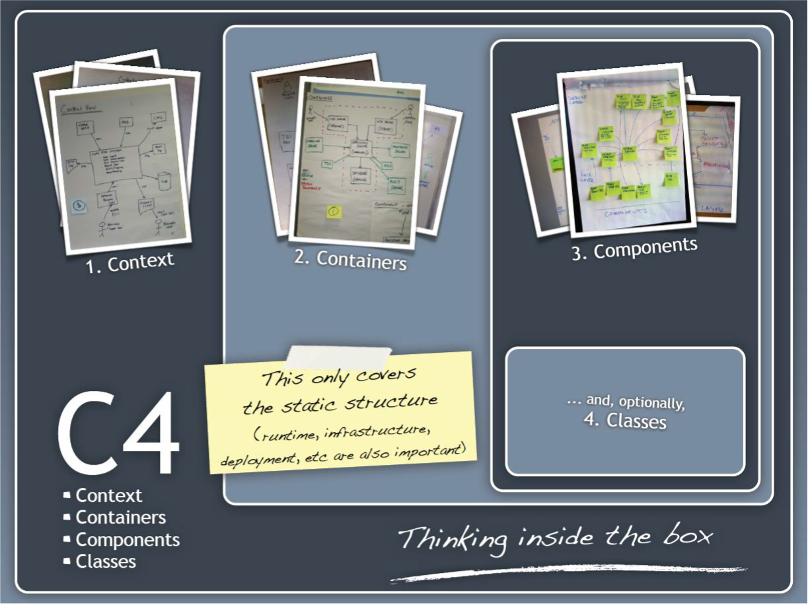

Description
1-Einleitung
Um eine saubere Architektur in einem Projekt zu erreichen, die einerseits alle Zuständigkeiten klärt und abgrenzt und zudem eine Verteilung auf verschiedene Layers und Tiers ermöglicht, müssen in Visual Studio mehrere Projekte angelegt werden.
Wir wollen zudem die Möglichkeit haben alle internen und externen Abhängigkeiten zentral zu verwalten.
2-Initiale Voraussetzungen
- VS2019 / .NET Core
- Nodejs
- NPM
- Postman
3-Einführung
Es soll ein neues Autovermietungssystem „CarRent“ erstellt werden. Das System soll aus Server-Teilen und optional einen Web-Client bestehen. 1. Die Daten sollen mittels «Repository Pattern» in eine Datenbank gespeichert werden können. 2. Die Business Logik soll auf dem Backend laufen und REST APIs anbieten. 3. Es soll zuerst ein Monolith erstellt werden und später auf eine Micro Service Architektur überführt werden. Optional: 4. Der Web-Client benutzt die REST API um die Funktionen auszuführen.
Folgende Detailinformationen liegen unstrukturiert über das zu entwickelnde System vor:
- Der Sachbearbeiter kann Kunden mit Namen und Adresse und Kundennummer im System verwalten, d.h. erfassen, bearbeiten, löschen und den Kunden mit dessen Namen oder Kundennummer suchen.
- Der Sachbearbeiter kann zudem die Autos von CarRent verwalten und nach denen suchen.
- Jedes Auto kann einer bestimmten Klasse zwischen Luxusklasse, Mittelklasse oder Einfachklasse zugeordnet werden und besitzt zudem eine Marke, einen Typ und eine eindeutige Identifikation.
- Jede Klasse besitzt eine Tagesgebühr.
- Bei einer neuen Reservation kann der Kunde ein Auto aus einer bestimmten Klasse wählen. Er muss zudem die Anzahl der Tage (Start/Enddatum) angeben, die er das Auto gerne mieten möchte. Dabei werden die Gesamtkosten berechnet. Wird die Reservation gespeichert, so wird sie mit einer Reservationsnummer ablegt.
- Bei Abholung des Autos wird die Reservation in einen Mietvertrag umgewandel
3.1 C4 Pattern

4 Arbeitspaket 1 – Big Picture / Vision
Hilfsmittel: Whiteboard, Flipchart, Postit, Word, UML Tool, Markdown, …
4.1.1 Context
- Was soll gebaut werden?
- Wer benutzt das System (users, actors, roles, personas, etc ?
- Wie passt es in die bestehende IT-Landschaft?
4.1.2 Containers
- Was sind die technologischen Entscheide?
- Wie kommunizieren die Container untereinander?
- Als Entwickler möchte ich gerne wissen, wo ich Code schreiben muss?
4.1.3 Components
- Aus welchen Komponenten und Services besteht das System?
- Ist klar wie das System „high-level“ arbeiten soll?
- Haben alle Komponenten ein Zuhause Container?
4.1.4 Classes (Optional)
- Was sind die wichtigen Konzepte des Systems?
- Wie stehen die Konzepte zueinander?
4.2 Aufgabe
Erstellen Sie mittels C4-Pattern das Big-Picture des Systems.
5 Arbeitspaket 2 – Domain Model und Use Cases
Hilfsmittel: UML Tool, Markdown, …
5.1 Aufgabe
Erstellen Sie das Domain Model und schreiben Sie die alle Use Cases im „Brief“-Format auf.
6 Arbeitspaket 3 – 4+1 Views
Hilfsmittel: UML Tool, Markdown, …
6.1 Aufgabe
6.1.1 Deployment View
Erstellen Sie ein Deployment Diagram mit Hilfe des Container Diagram des Big Picture.
6.1.2 Logical View
Erstellen Sie ein Component Diagram und ein Class Diagram mit Hilfe des Domain Models
6.1.3 Implementation View
Definieren Sie die Repository und Source-Struktur, sowie wichtige Elemente der Services und Komponenten.
7 Arbeitspaket 4 – Implementierung
Hilfsmittel: VS2019, …
7.1 Aufgabe
Implementieren Sie das System mit Hilfe der Anforderungen und den verschiedenen Architecture Views.
8 Arbeitspaket 5 – Continuous Integration und Metriken
Hilfsmittel: CI/CD (Travis, GitLab, ...), SonarQube, Code Analysis, …
8.1 Aufgabe
Hier soll der erstellen der jar, wars und weitere deployables automatisch nach jedem check-in gebaut und getestet werden. Zudem soll das Buildsystem weitere Metriken (code-coverage, code-qualtity, …) messen und darstellen.
9 Arbeitspaket 6 – Dokumentation
9.1 Aufgabe
Jedes System braucht gewisse Dokumentation. Erstellen sie eine Dokumentation mit Markdown, die sich ungefähr an die Vorgaben des arc42 halten.
10 Bewertung
| Artifact | Inhalt | Bewertung |
|---|---|---|
| Software Architecture Document (arc42) | Big Picture & Vision SystemOverview - C4 Pattern (w/o Classes) Use Cases / Requirements Domain Models and System Sequence Diagrams Verschiedene Views (4+1) - Logical - Deployment - Implementation Qualitätsbaum für NFR Teststrategie / -planung Metrikdefinition |
40% |
| Architecture / Design / Source Code | GIT - Client Code - Server Code Unit- / Integration- / System-Tests |
40% |
| Build & Release | Automatischer Build & Testing auf CI System Automatische Messung von Metriken mit SonarQube |
20% |
11 Abgabe/Termin
Date: 06. September 2021 23:59:59
Git-Repo Link auf cmenzi@crip.ch und Moodle Eintrag